本ページについて
三省堂から発売された『「ビジュアル音声学』の補足資料です。教育用・授業用であれば自由に使って頂いてかまいません。その場合、連絡は必要ありません。研究用に図などを引用する場合原典を明記して下さい。
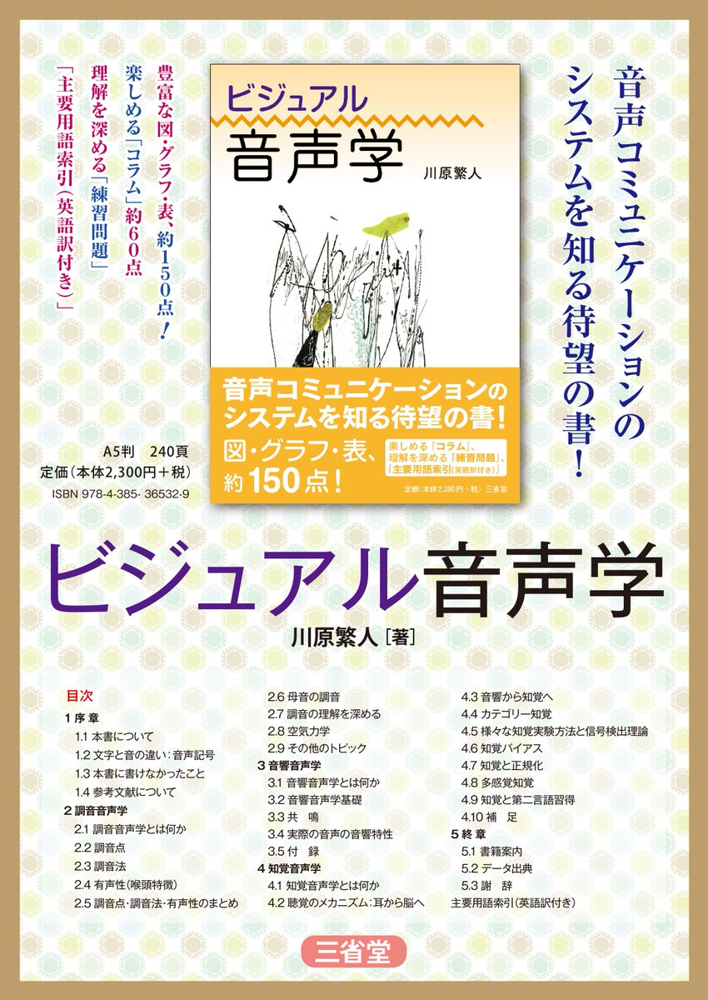
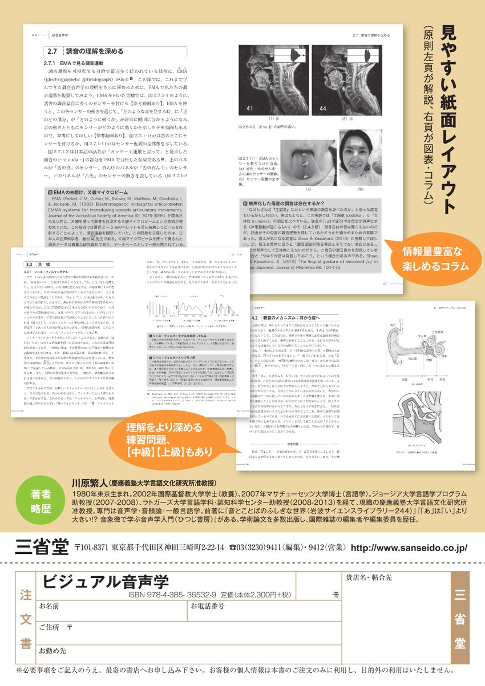
（0）正誤表など
（1）動画
[b] in “bat” (2.2.2節）
[d] in “dirt” (2.2.2節）
[dʒ] in “judge” (2.2.2節）
[ɡ] in “good morning” (2.2.2節）
"health" （追加）
"pitcher" （追加）
"strength" （追加）
"bonehead" （追加）
EPG録音風景(2.2.4節）
EPG録音風景(2.2.4節）
[b] in “bat” (2.3.2節）
[s] in “sitter” (2.3.2節）
[m] in “milk” (2.3.2節）
[w] in “wood” (2.3.2節）
[r] in “right” (巻き舌）(2.3.2節）
[l] in “light” (2.3.2節）
[r] in “run around” (2.3.2節）
英語の無声子音の帯気 (2.4.4節）
声帯の動き（ハイスピードカメラ） (2.4.4節）
「あ」と「い」を比べてみよう(2.6.1節）
「あ」、「え」、「い」を比べる(2.6.1節）
「い」と「う」を比べる(2.6.1節）
[ɑ] in “hot” (2.6.4節）
[æ] in “bat” (2.6.4節）
[i] in “beet” (2.6.4節）
[u] in “boot” (2.6.4節）
[ə] in “pilaf” (2.6.4節）
[i] in “beet” (2.6.4節）
[i] in “bit” (2.6.4節）
[u] in “boot” (2.6.4節）
[ʊ] in “foot” (2.6.4節）
EMAセンサーの取り付け (2.7.1節）
EMAセンサーの動き (2.7.1節）
超音波動画 (2.7.2節）
濁音発声時の口腔の広がり（2.8.2節）
濁音発声時の喉頭（喉仏）の下降（節）
ベルヌーイ効果を実感する。速度が上がると圧力が下がります。この効果によって、空気が流れると自動的に声帯が閉じます。
肺の仕組み
スリンキーによる疎密波のデモ(3.2.3節）
波の重ね合わせの原理1(3.2.5節）
波の重ね合わせの原理2(3.2.5節）
空間の長さと共鳴する音の高さの相関（3.3.3節）
歯磨きで第二フォルマントを聞く（3.4.1節）
(2) 音声ファイル
開放のない[t]（2.2.1節、コラム6）：
ヒンズー語の歯音の"t"（2.2.4節）：
ヒンズー語の反り舌音の"t"（2.2.4節）：
[t]を含むEGG信号（2.4.2節）：
[d]を含むEGG信号（2.4.2節）：
英語の母音（2.6.3節）：
[y]（円唇前舌母音）（2.6.1節）：
有声促音のEGG信号（2.8.2節）：
平板アクセント（2.9.2節）：
頭高型（2.9.2節）：
中高型（2.9.2節）：
尾高型（2.9.2節）：
高音での「あ」（3.3.1節）：
高音での「い」（3.3.1節）：
数々の無声摩擦音（3.4.3節）：
rice（3.4.7節）：
lice（3.4.7節）：
object (名詞)（3.4.10節）：
object (動詞)（3.4.10節）：
atom（3.4.10節）：
atomic（3.4.10節）：
ヒンズー語の歯音の"t"（2.2.4節）：
ヒンズー語の反り舌音の"t"（2.2.4節）：
[t]を含むEGG信号（2.4.2節）：
[d]を含むEGG信号（2.4.2節）：
英語の母音（2.6.3節）：
[y]（円唇前舌母音）（2.6.1節）：
有声促音のEGG信号（2.8.2節）：
平板アクセント（2.9.2節）：
頭高型（2.9.2節）：
中高型（2.9.2節）：
尾高型（2.9.2節）：
高音での「あ」（3.3.1節）：
高音での「い」（3.3.1節）：
数々の無声摩擦音（3.4.3節）：
rice（3.4.7節）：
lice（3.4.7節）：
object (名詞)（3.4.10節）：
object (動詞)（3.4.10節）：
atom（3.4.10節）：
atomic（3.4.10節）：
(3) スクリプト
拡張子が.RのものはRのスクリプト、.PraatのものはPraatのスクリプトです。
様々な三角関数（3.2.2節）PaをdBに変換（3.2.2節）
二つの波を足す・4つの波を足す（3.2.2節）
好きな4つの波を足す（3.2.2節）
倍音を足してみる（3.2.2節）
のこぎり波を作る（3.2.2節）
矩形波を作る（3.2.2節）
1管モデルの共鳴を求める（3.3.4節）
2管モデルの共鳴を求める（3.3.5節）
2管モデルのシミュレーション（3.3.5節）
指数関数・対数関数（3.2.2節）
(4) カラー図
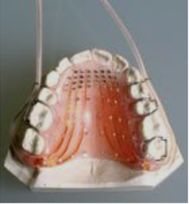
図2.2.4-1(a)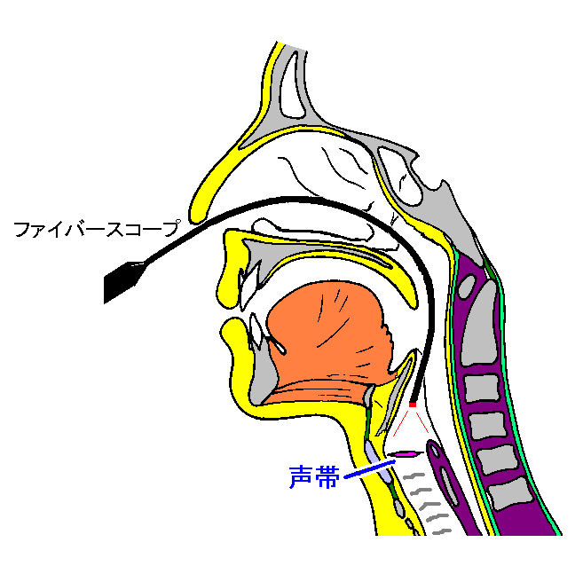
図2.4.4-1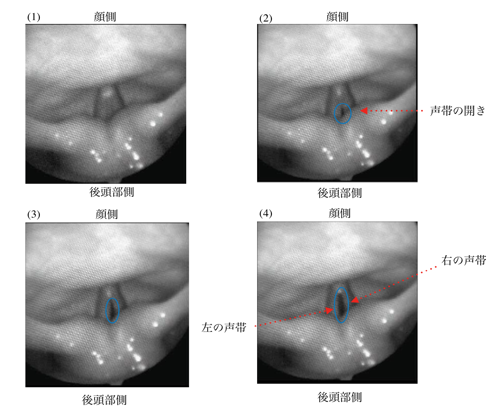
図2.4.4-2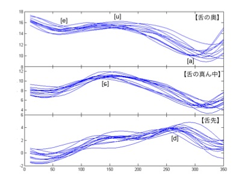
図2.7.1-2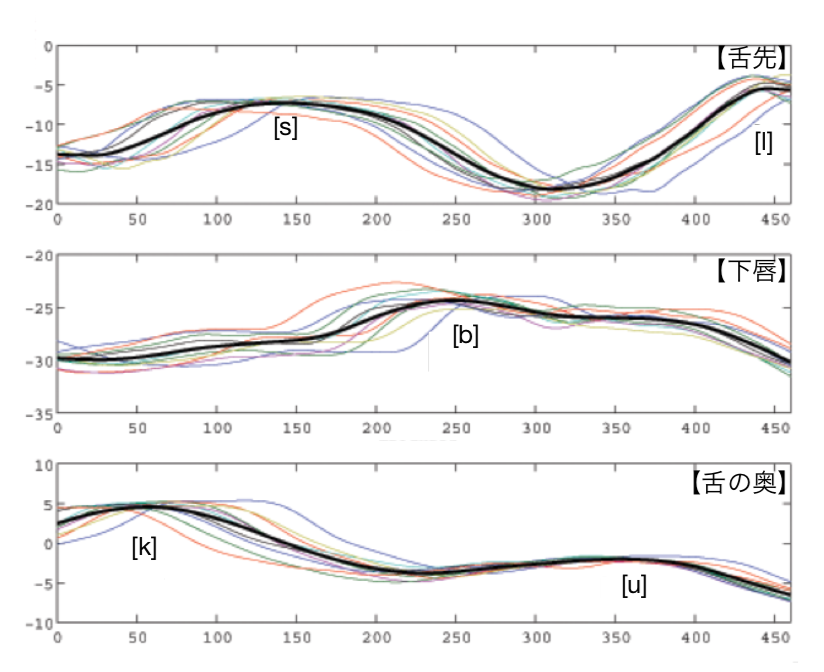
図2.7.1-3（本に載っている図はこの図を簡略化したものです。この図はJason Shaw氏の提供。）
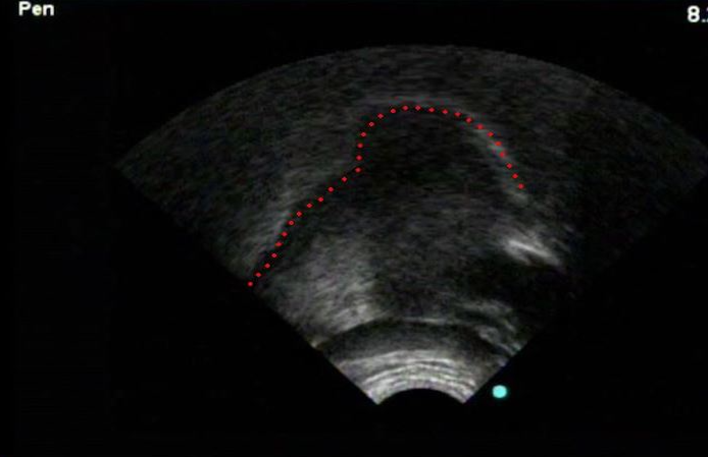
図2.7.2-1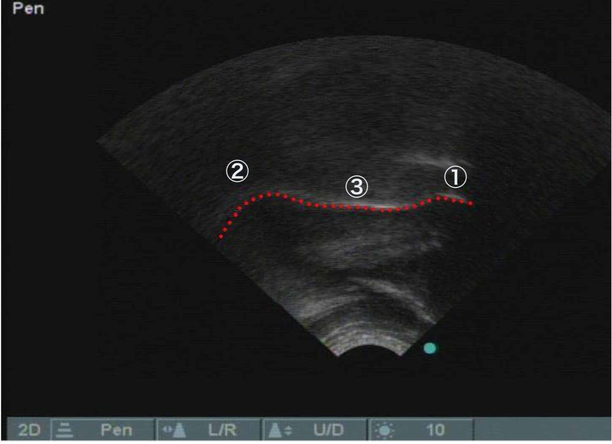
図2.7.2-2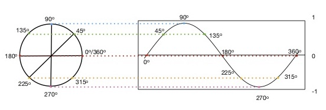
図3.2.1-3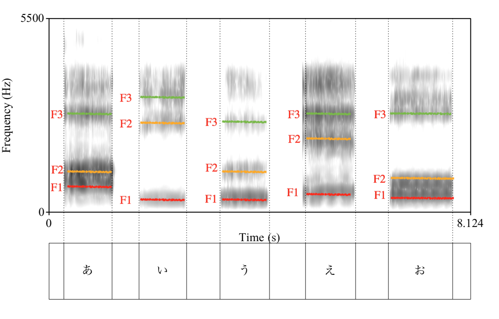
図3.4.1-1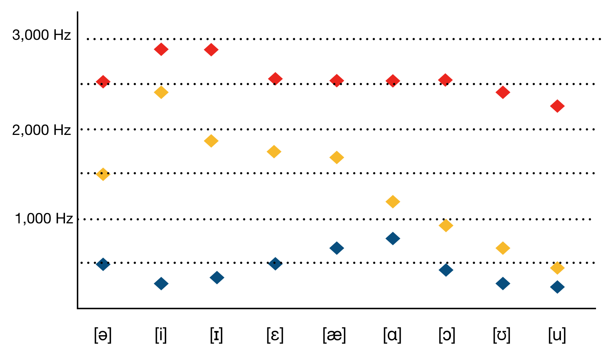
図3.4.2-1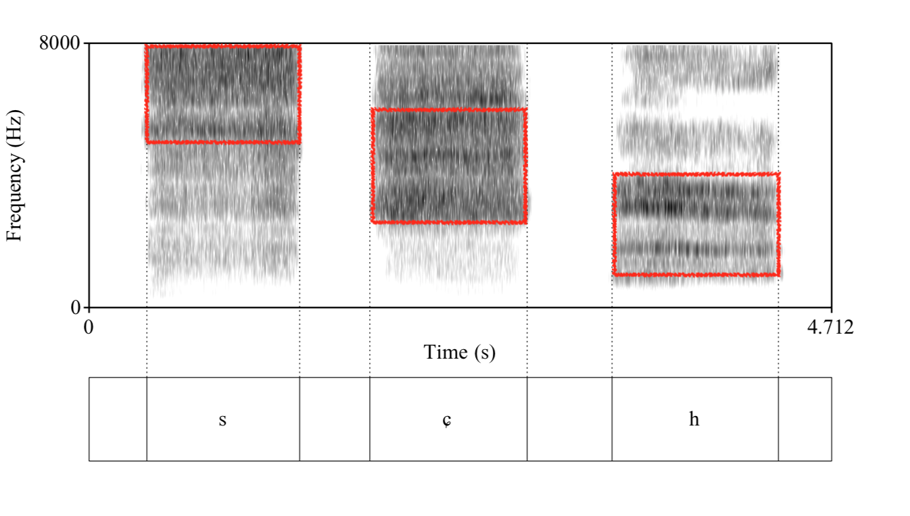
図3.4.3-1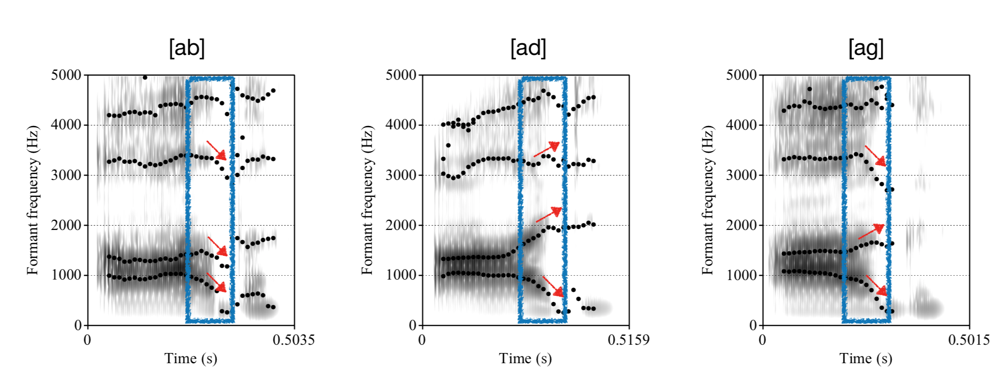
図3.4.4-2(5) 補足資料・補足練習問題
d-primeおよびcの計算用のxlsシート（4.5節）
EGG波形とそれを微分した波形。OQ (Open Quotient)=声帯が開いている割合。今川博先生提供。
EGG波形、PGG波形、音響波形の相関。音響波形とEGG波形にずれが見られる。今川博先生提供。
図3.2.5-1の成分波と合成はのy軸を揃えたもの。本書ではy軸を揃えると図3.5.2-2が分かりにくくなるので合成波のy軸の範囲を変えていた。
図3.2.5-2の成分波と合成はのy軸を揃えたもの。少しわかりにくいかもしれないが、提示の仕方としてはこちらの方が正直かもしれない。
図3.2.5-3(b)の直し。図図3.2.5-5(b)と向きが違っていて分かりにくかったのでここで訂正致します。（第2版で訂正）。
日本語の母音のフォルマント散布図。プロの声優さんのデータをもとに計算したもの。
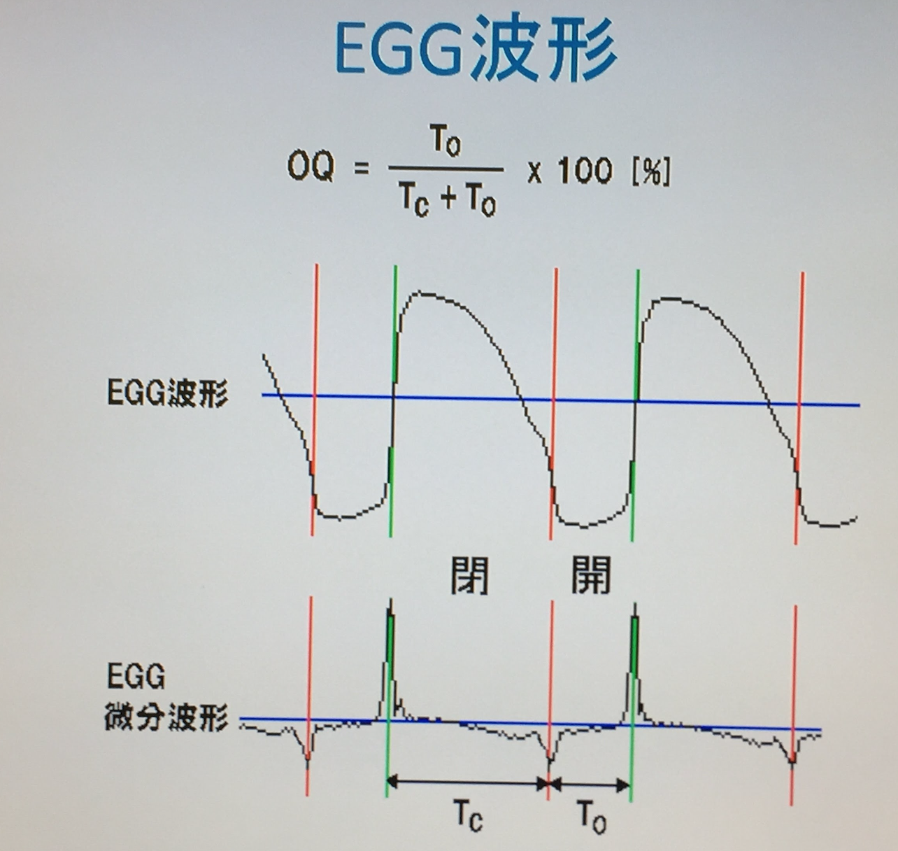
EGG波形とそれを微分した波形。OQ (Open Quotient)=声帯が開いている割合。今川博先生提供。
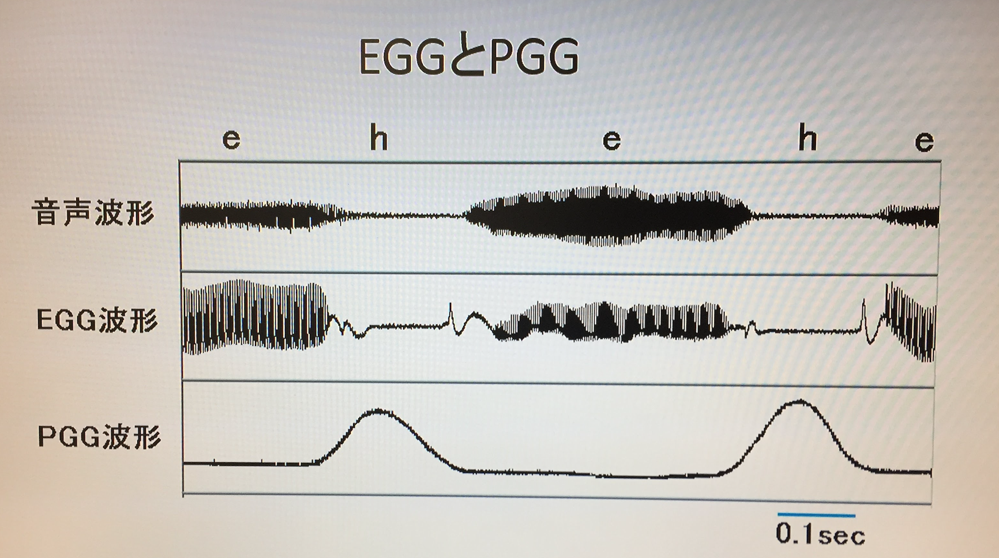
EGG波形、PGG波形、音響波形の相関。音響波形とEGG波形にずれが見られる。今川博先生提供。
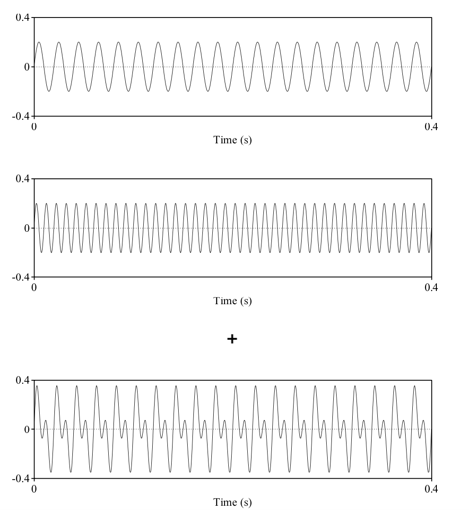
図3.2.5-1の成分波と合成はのy軸を揃えたもの。本書ではy軸を揃えると図3.5.2-2が分かりにくくなるので合成波のy軸の範囲を変えていた。
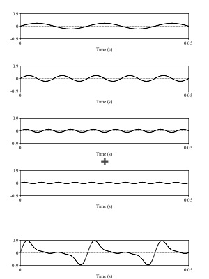
図3.2.5-2の成分波と合成はのy軸を揃えたもの。少しわかりにくいかもしれないが、提示の仕方としてはこちらの方が正直かもしれない。
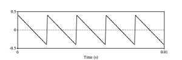
図3.2.5-3(b)の直し。図図3.2.5-5(b)と向きが違っていて分かりにくかったのでここで訂正致します。（第2版で訂正）。
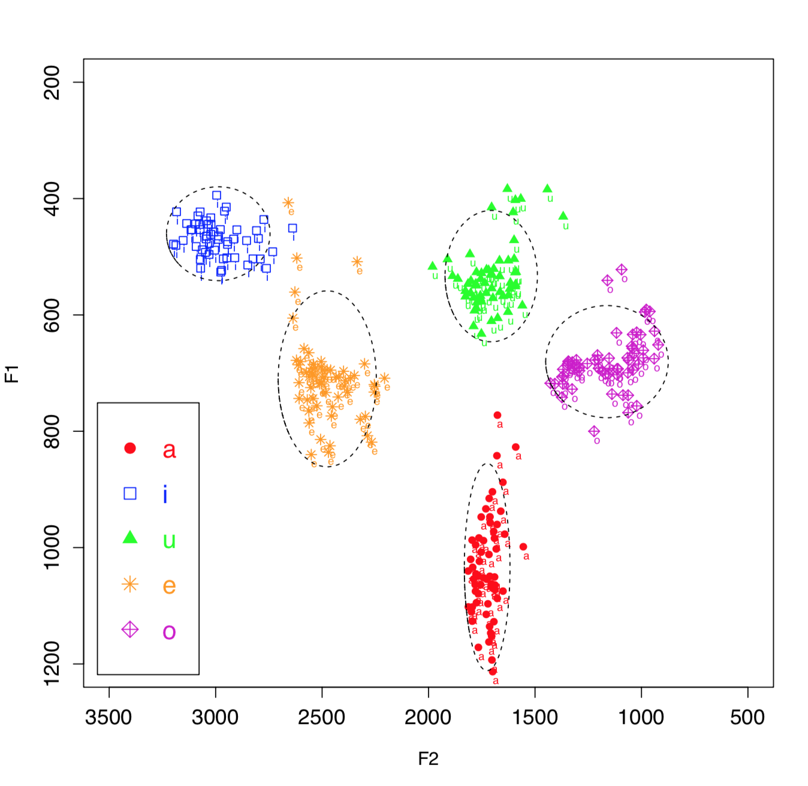
日本語の母音のフォルマント散布図。プロの声優さんのデータをもとに計算したもの。
(6) 参考リンク集
UPSID
UPSIDで検索
P-Baseで検索
iPAアプリ
international phonetic association
IPA keyboard
IPA keyboard
X線マイクロビームデータベース
the real-time MRI IPA charts
Osamu Fujimuraを偲ぶEMA動画
ニューヨーク大学の言語学科による超音波研究の紹介
Praat Download（第4章）
著者によるPraatの使い方解説動画
分かりやすい高校物理の部屋（縦波と横波）
等ラウドネス曲線
フーリエ変換体験ウェブアプリ
上智大学荒井先生のサイト
TubeTalker
Voice Quality Supplementary Materials
スペクトログラム読解クイズ
マガーク効果デモ1
マガーク効果デモ2
日本語の母音，子音，音節：調音運動の実験音声学的研究
Buckeye Corpus
日本語話し言葉コーパス
日本語コーパスのまとめ
UPSIDで検索
P-Baseで検索
iPAアプリ
international phonetic association
IPA keyboard
IPA keyboard
X線マイクロビームデータベース
the real-time MRI IPA charts
Osamu Fujimuraを偲ぶEMA動画
ニューヨーク大学の言語学科による超音波研究の紹介
Praat Download（第4章）
著者によるPraatの使い方解説動画
分かりやすい高校物理の部屋（縦波と横波）
等ラウドネス曲線
フーリエ変換体験ウェブアプリ
上智大学荒井先生のサイト
TubeTalker
Voice Quality Supplementary Materials
スペクトログラム読解クイズ
マガーク効果デモ1
マガーク効果デモ2
日本語の母音，子音，音節：調音運動の実験音声学的研究
Buckeye Corpus
日本語話し言葉コーパス
日本語コーパスのまとめ